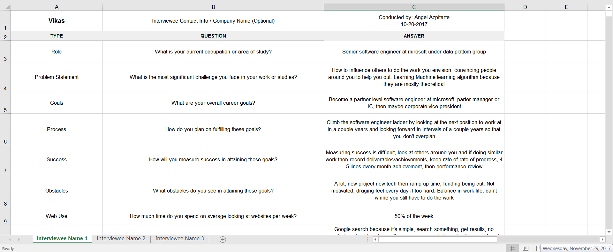
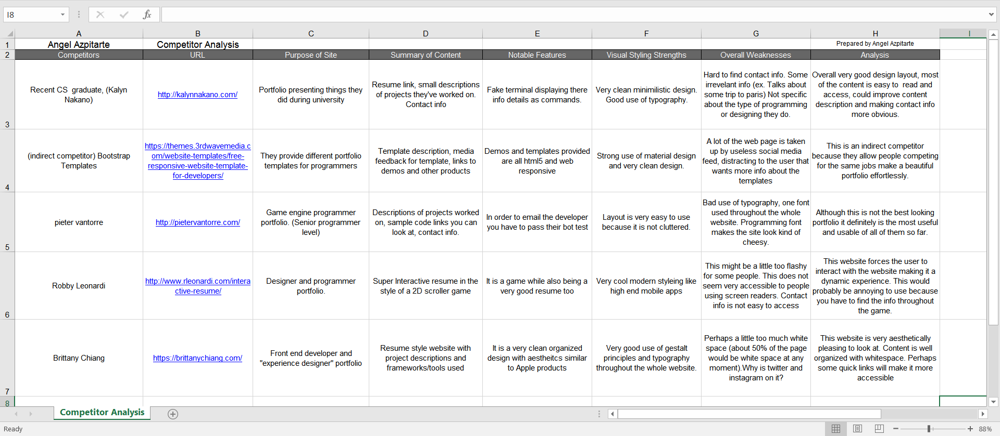
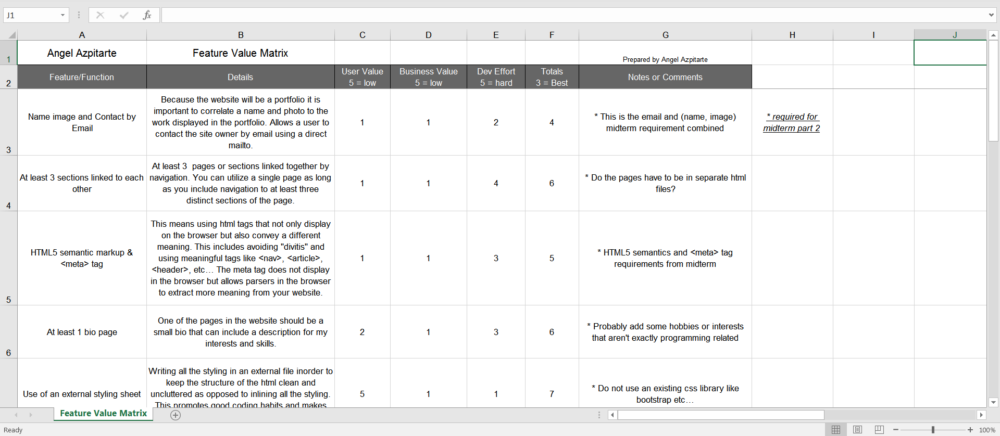
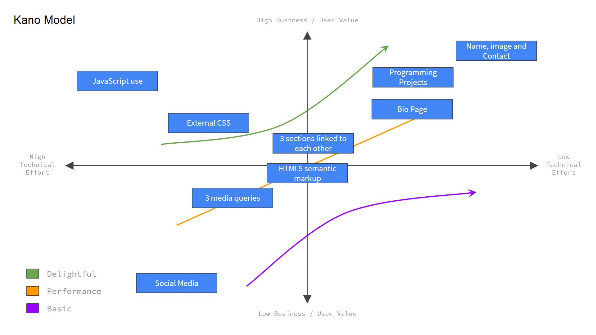
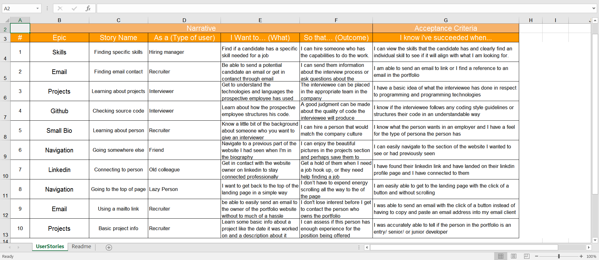
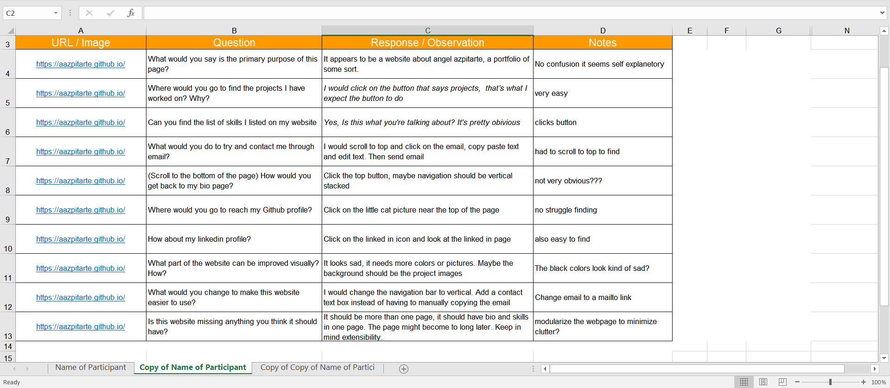
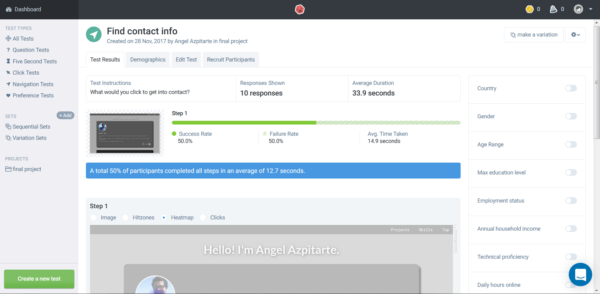

User Research
User Interviews

Most of the people I interviewed were people majoring in computer science just like me, with the exception of an engineer in Microsoft and a friend in a different field. I learned that people had similar expectations for what a portfolio should include.
Interviews link
Competitor Analysis

In the competitor analysis stage I visted many portfolios to get a gist or a feel of what is included in the portfolio. It seemed like designer portfolio focused on using frameworks and fancy animations on there websites to show off their skills, while programmers focused more on the content that their websites have (not much on the aesthetics)
Analysis link
Feature Value Matrix

I initially based the values off of the requirements listed for the midterm. Afterwards I added what I thought was necessary in a portfolio and what the interviews suggested too. The feature matrix did not go to in-depth because no one seemed to think more things were necessary.
Matrix link
Feature Prioritization

The things that all portfolios had were set with the highest priorities because I considered them essential for what makes a portfolio. The other features that were not considered essential I ranked by my prior experience with making websites. I knew that one of the hardest aspects would relate to creating meaningful content to the website.
Priortization link
User Testing
User Stories

User stories are useful because they allow designers to think about how the website will be used by their main customers. It also helps you explain why certain features are important instead of blindly implementing them. I created my user stories by putting myself in the shoes of people who have actually used prototypes of my websites recruiters, interviewers, and friends.
Stories link
Cognitive Walkthrough

A cognitive walkthrough is a test that involves a user conducting tasks while giving qualitative feedback. Out of all the tests I thought this was the most important because it showed me what people where actually thinking about my site will using it. I could ask for more details if I wanted more information about their thoughts.
Walkthrough link
User Test

For the usability tests I created to navigation tests and one preference test. The navigation tests were basically checking for life signs. They were to make sure that the navigation in the site was bullet proof in terms of ease of use. The preference test was created because people had brought up the issue of my navigation to the top. I added a logo that many though was an arrow (it should be a small house). In the end people still weren't sure what was best.
Usability test: Navigation 1
Usability test: Navigation 2
Usability test: Preference
Summary Findings
During my research I found out how simple user experience research can be. I initially though that it might involve a lot more math like statistics or that the tests would take for ever to conduct. In the end I thought that many of these tests were simple to create and conduct and they provide a lot of benefit for the amount of work you put into them. I also thought that many of the design principles can be thought about through the gestalt principles, when ever I was in doubt about the placement of a certain design element in the page I would cross reference it with my knowledge of the gestalt principles.
Most of the challenges I faced revolved around implementing the design. I had previously built some toy websites a couple years ago that did not involve a lot of design work or thinking about responsive design. In this course those were a major focus, and they take a lot of time to think about and implement especially for a novice like me. The other challenge was coming up with good content. Many people appreciate the images I have on my site, what they don't know ist that I spent a non-trivial amount of time deciding what I wanted to show and what I though people would want to read and see. In the end it felt good getting a design up and running.
Incorporation Findings
During the testing process the biggest complaint I received was the contact method I had for my email. The original way I had it set out was that the user would click on the email logo and then they would be redirected to another page that had my email written out in english "angelazpitarte at yahoo dot com" I had set it up that way because I was concerned about being spammed by bots through my email. In the end it was a better idea just to include a mailto: link.
The second biggest complaint I had was about the mono-chromatic scheme I had used through out the site. People would always take their word back when they would view my project because the richness in color they had. This was an early design decision I had made, I wanted to shift peoples focus through my website through the use of colors. This is why the main things that have color are my picture and my projects. Other than this everyone I tested with thought the rest should be left as is.